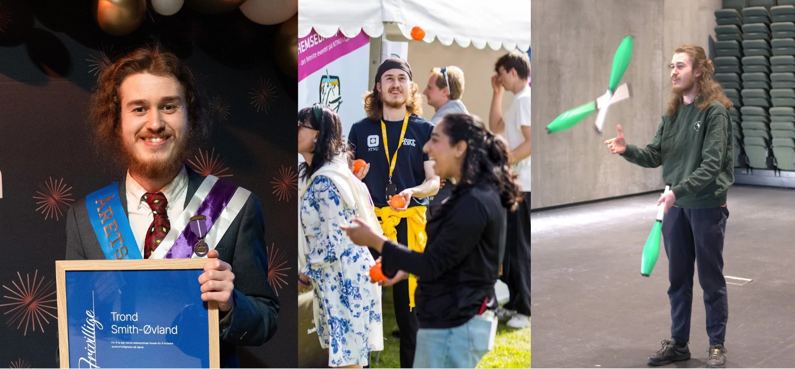

Hvem er jeg?
Jeg tenker du alt har sett jeg heter Trond Smith-Øvland (det er der TS-Ø kommer fra). Jeg vil ikke påstå at det er lett å si hvem jeg er, siden jeg gjør mye forskjellig.
Men om du vil bli mer kjent med meg kan du i det minste få noen fun facts.

Frivillighet
I Gjøvik er jeg veldig aktiv i studentfrivillighet og fikk prisen “Årets frivillige” på frivillighetsgallaen 2025, noe Sit arrangerer for frivillige studenter ved Gjøvik.
De foreningene jeg er mest akive i er:
- Gjøvik Juggling Club
- NTNUI-Gjøvik E-sport
- Laget (nkss.no)
Hobbyer
En del av fritiden min går til frivillighet og foreningene jeg er med i, men av ting jeg ellers liker å gjøre kommer:
- Sjonglerer med flowersticks, sjongleringskjegler og baller.
- Spilling på Nintendo Switch. Spiller mest Smash Bros og Splatoon 3.
- Ser på videoer og serier på Youtube og Max.
- Jobbe med design i enten Figma eller Affinity designer.
Hvis du fortsatt vil vite mer får du sende en melding, eller vente til jeg oppdaterer denne siden.